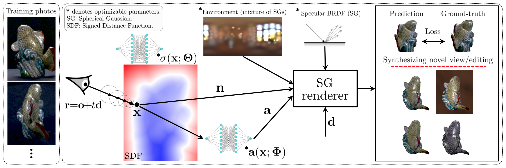

PhySG: Inverse Rendering with Spherical Gaussians for
Physics-based Material Editing and Relighting
CVPR 2021
(*Equal contribution)

Technical video
Abstract
We present PhySG, an end-to-end inverse rendering pipeline that includes a fully differentiable renderer and can reconstruct geometry, materials, and illumination from scratch from a set of RGB input images. Our framework represents specular BRDFs and environmental illumination using mixtures of spherical Gaussians, and represents geometry as a signed distance function parameterized as a Multi-Layer Perceptron. The use of spherical Gaussians allows us to efficiently solve for approximate light transport, and our method works on scenes with challenging non-Lambertian reflectance captured under natural, static illumination. We demonstrate, with both synthetic and real data, that our reconstructions not only enable rendering of novel viewpoints, but also physics-based appearance editing of materials and illumination.